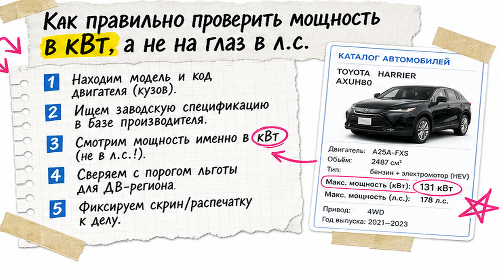
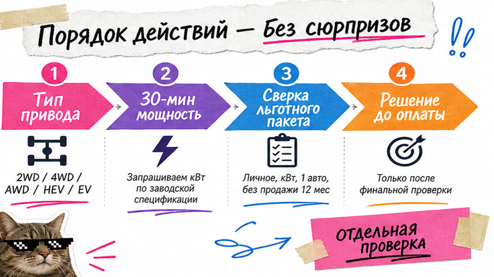

Иван почти внёс депозит за Kia Sportage на 177 л.с.: "я же физлицо, значит льготный утильсбор". На СВХ во Владивостоке показали порог для ДВС – до 160 л.с. включительно, а в документах это ещё и киловатты. Льгота – не скидка в рекламе, а жёсткий пакет условий. Ниже – чеклист до депозита: мощность, тип мотора, один авто в год, запрет ранней продажи. После галочек вы либо идёте за расчётом по VIN, либо откладываете оплату.
Главное до депозита: Льготный утильсбор в 2026 для физлица – не статус "я не юрлицо", а связка: личное пользование, мощность в пределах порога, не больше одного подходящего авто за 12 месяцев и без перепродажи раньше года. Порог в кВт: для ДВС до 117,68 кВт (около 160 л.с.), для электро и части гибридов – отдельный, более жёсткий лимит. Хоть один "нет" – депозит не платите, пока не получите расчёт в каталоге Авто-Сейлс.
Спрос на "льготный утильсбор 2026" высокий, а в ленте полно калькуляторов. С декабря 2025 мощность вошла в формулу, с января 2026 коммерческие коэффициенты выросли, а льготный режим для физлиц остался узким коридором. Мы в Авто-Сейлс во Владивостоке сначала ставим галочки, потом деньги.
Типичная ошибка новичка: услышать "льготный утильсбор" и решить, что любой ввоз на своё имя автоматически дешёвый. Нет. Льгота – пакет: физлицо, личное пользование, мощность и тип двигателя в пределах порога, лимит по числу авто за год и готовность не продавать машину минимум 12 месяцев.
Например, покупка "для себя" в разговоре и оформление "под перепродажу" – уже другая история. Если обещают льготу без сверки мощности – стоп. Сделайте таблицу "да/нет" по статусу ввоза до выбора лота.
Делать: фиксируйте в чате "личное пользование, физлицо, один авто в год". Не делайте ставку бюджета только на фразу "я физлицо".

Самый дорогой сюрприз – "ровно 161 л.с." или комплектация, где в карточке одно, а в паспорте другое. Граница для ДВС: до 117,68 кВт включительно против "от 117,69 кВт" (около 160 л.с.). Считать лучше по документам в киловаттах: 1 кВт ≈ 1,35962 л.с.
В реальном проекте из Кореи или Японии выписывайте сразу л.с. и кВт. Если цифры пляшут – не бронируйте. Для ДВС смотрите и объём: на практике коридор часто упирается в лимит около 3,0 л.
Делать: проверьте киловатты в документах лота. Не делайте депозит, пока мощность не закрыта галочкой "в пределах порога".
Схема до депозита:
Карточка лота → Тип мотора → кВт/л.с. → Порог ДВС или EV/гибрид → Лимит 1 авто/год → Отказ от продажи 12 мес. → Расчёт в каталоге → Депозит

Запрос "гибрид под льготный утильсбор" частый, особенно по Китаю. Для электро и последовательных гибридов смотрят 30-минутную мощность: коридор уже – примерно до 80 л.с. (около 58,84 кВт). Параллельные считают иначе, по суммарной мощности.
На пальцах: 30-минутная мощность – не пик "на обгоне", а устойчивая величина из документов. Если в объявлении только пиковая цифра – не угадывайте. Проверьте тип гибрида и попросите выписку, иначе "почти льготный" лот уходит в коммерческий режим.
| Тип | На что смотреть | Порог ориентир | До депозита |
|---|---|---|---|
| Обычный ДВС | кВт в документах, объём | до 117,68 кВт (≈160 л.с.) | Обязательная галочка |
| Электро / последовательный гибрид | 30-минутная мощность | до ≈80 л.с. (≈58,84 кВт) | Без цифры – стоп |
| Параллельный гибрид | Правила суммарной мощности | Не "на глаз" по рекламе | Только с расчётом |
| Любой "почти 160" | Граница 117,68 vs 117,69 кВт | Ошибка на 1 кВт = другой режим | Не платить до сверки |
Делать: используйте таблицу как фильтр лота. Не делайте вывод "электро всегда под льготу" – порог здесь жёстче.
Даже идеальная мощность не спасёт, если это уже второй льготный ввоз за 12 месяцев или вы планируете быструю перепродажу. В практике 2026: личное пользование, не больше одного подходящего авто за год, владение без продажи минимум 12 месяцев. Нарушили – риск доплаты до коммерческой ставки.
Честно говоря, "куплю и через полгода продам другу" – плохой план под льготу. Сделайте решение заранее: машина остаётся у вас минимум год. Запишите дату предыдущего ввоза на ваше имя, если он был.
Делать: проверьте лимит "один авто / 12 месяцев" до брони. Не делайте вторую "льготную" машину в тот же год в надежде, что "пронесёт".
В чатах любят истории "растаможили там дешевле". Для новичка это лотерея: другой маршрут и бумаги, а льготу физлица в РФ так легко не "переклеить". Рекомендуем путь: подбор → логистика → растаможка в России с хабом во Владивостоке.
| Критерий | Прямой ввоз (РФ / Владивосток) | Серые обещания "через ЕАЭС" |
|---|---|---|
| Прозрачность | Физлицо, личное пользование, понятный пакет | Туманные обещания "там так можно" |
| Риск для льготы | Сверяется по условиям до депозита | Легко потерять нить документов |
| Ответственность | Сопровождение, СВХ, выдача | Размытая зона |
| Бюджет | Расчёт по VIN в каталоге | Не закладывать "магическую экономию" |
Итоговый вердикт: Для льготы физлица без нервов выбирайте прямой ввоз и растаможку в РФ. Неофициальные схемы не основа бюджета.
Делать: избегайте маршрутов без понятных документов. Не делайте депозит "чтобы успеть на корабль" до ясного маршрута.
Рабочий чеклист "да/нет". Если хоть один пункт "нет" или "не знаю", депозит не отправляйте.
Критерий результата: заполненный чеклист перед глазами. Все "да" – льгота возможна, но сумму подтверждаете по лоту. Есть "нет" – сначала пересмотр комплектации или коммерческий расчёт, потом деньги.
Делать: идите по чеклисту сверху вниз в день выбора лота. Не делайте оплату, потому что "в мессенджере торопят".
В статье нет калькулятора ставок и готовых сумм по утилю и пошлинам: цифры зависят от VIN, возраста, мощности и даты. Онлайн-калькуляторы легко врут относительно правил 2026.
Что сделать сегодня: пройти чеклист по 1–2 лотам, отсеять непроходные по мощности, затем запросить расчёт в каталоге avto-sales125.ru. Детали по VIN – в Telegram @avtosales125. Форм на странице нет.
Делать: добавьте в запрос лот, год, мощность в кВт и статус физлица. Не делайте скрин чужого калькулятора основой депозита.
Нужен подбор под ключ – откройте каталог Авто-Сейлс до перевода денег. Так вы закрываете боль "влететь на коммерческий тариф из-за 161 л.с. или гибрида" на берегу.
Материал проверен: редакция Авто-Сейлс (эксперты по авто под заказ из Японии, Кореи и Китая).
Достоверность: факты сверены с ПП РФ № 1713 (с 01.12.2025), обзорами ConsultantPlus / БУХ.1С / 1С ИТС, разъяснениями порога кВт на Drom и практикой заказов через Владивосток; расчёты по VIN – в каталоге.
Не одна кнопка "для всех". Сверьте пакет: личное пользование, мощность в пороге, один авто за 12 месяцев, без продажи раньше года. Сумму по VIN запросите в каталоге.
Нет. Для ДВС ориентир – до 160 л.с. включительно (до 117,68 кВт). От 117,69 кВт коридор закрыт. Проверьте кВт в бумагах до депозита.
Иногда, но не все. Для электро и последовательных гибридов смотрите 30-минутную мощность (около 80 л.с.). Параллельные считают иначе. Без цифры – сначала расчёт.
Риск доплаты до коммерческой ставки. При быстрой перепродаже не стройте бюджет на льготе – сразу коммерческий сценарий.
На дату материала отдельный закон ещё не принят – это обсуждение, не льгота. В бюджет закладывайте только общие условия физлица.
Не для депозита. Правила менялись с декабря 2025 и января 2026. Используйте чеклист условий, затем расчёт по лоту у Авто-Сейлс.
Выпишите кВт и тип мотора по 1–2 лотам, пройдите чеклист из десяти пунктов, отсейте "нет". По оставшимся откройте каталог и запросите расчёт до оплаты.